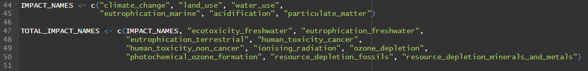
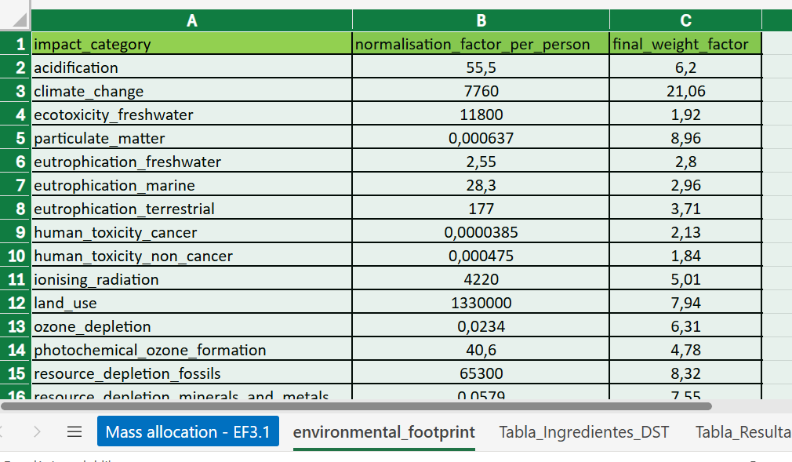
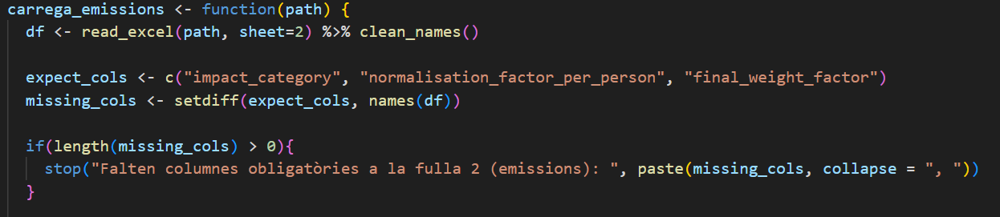
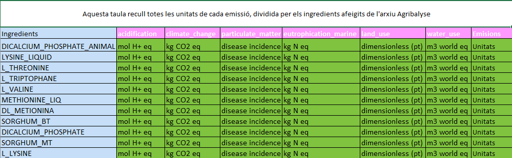
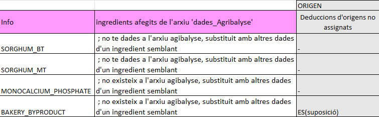
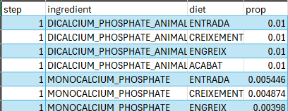
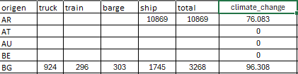
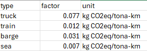
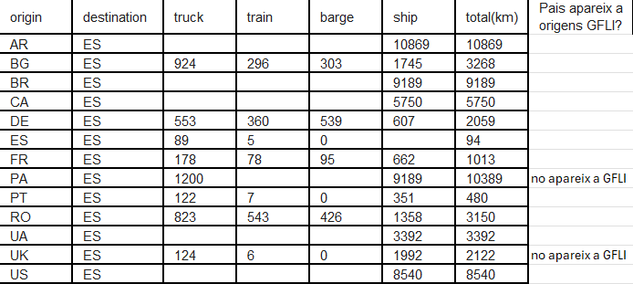

✔️ Format i restriccions dels arxius del dashboard d'emissions
Arxiu de dades mediambientals
Aquest arxiu és la font principal de dades d'emissions per a cada ingredient, organitzades per procedència. Inclou els indicadors mediambientals necessaris per al càlcul de l'impacte ambiental al dashboard.
S'estructura en 5 fulls de treball, descrits en el mateix ordre en què apareixen a l'Excel:
1. Mass Allocation
Full principal d'on s'obtenen les dades d'emissions dels ingredients que alimenten el dashboard.
Característiques NO modificables
Per garantir el funcionament correcte del sistema, els noms de les capçaleres s'han de mantenir exactament iguals.
Capçaleres no modificables:
- ingredient
- group
- origen
- default_origen
- acidification
- climate_change
- ecotoxicity_freshwater
- particulate_matter
- eutrophication_marine
- eutrophication_freshwater
- eutrophication_terrestrial
- human_toxicity_cancer
- human_toxicity_non_cancer
- ionising_radiation
- land_use
- ozone_depletion
- photochemical_ozone_formation
- resource_depletion_fossils
- resource_depletion_minerals_and_metals
- water_use
Característiques modificables
Les capçaleres estan diferenciades en 3 colors:
- Rosa: emissions predeterminades del dashboard.
- Blau: emissions afegides per al càlcul de la petjada mediambiental.
- Verd: emissions no utilitzades actualment al dashboard.

Els colors es poden modificar sense afectar el funcionament del dashboard, ja que la lectura es fa pels noms de les capçaleres.
Si es vol afegir una emissió nova, cal incorporar-la manualment al codi. La secció corresponent es troba a Global.R:

També es poden afegir les files necessàries, sempre mantenint l'estructura de columnes.
2. Environmental_Footprint
Full complementari amb dades de petjada ambiental dels ingredients procedents de fonts externes.
Característiques NO modificables
Per tal que funcioni óptimament, la taula ha de ser-hi a la fulla número 2 de l'Excel, ja que és en la que busca la corresponent taula. Cualsevol afectació en la posició d'aquesta fulla, requerirá de canvis en l'arxiu globals.R a la seva corresponent posició.

A més a més, tot i que les posicions a la taula son bescanviables, els noms no ho son i ha de mantenir la següent estructura per columnes:
1 - "impact_category": llistat de categories d'impacte a tenir en compte (es poden afegir o restar-ne sense complicacions). 2 - "normalisation_factor_per_person": valor pel qual es dividirà el càlcul de proporció X impacte. 3 - "final_weight_factor": valor pel qual es multiplicarà el càlcul de proporció X impacte / normalisation_factor.
Cualsevol canvi de noms o requeriment d'una nova mètrica, haurà de vindre acompanyat d'un canvi de codi a la funció "carrega_emissions" del fitxer globals.R.

3. Tala_Ingredientes_DST
Full de suport per a la correspondència entre ingredients i estructures internes de càlcul.
4. Tabla_Resultados
Full on es consoliden els resultats finals dels càlculs ambientals.
5. Unitats nous ingredients
Vam haver d'extreure dades d'un arxiu anomenat dades_Agribalyse, ja que hi havia més quantitat d'ingredients que conformen les dietes que no pas a l'arxiu de dades mediambientals. Això produïa errors en els càlculs.
Aquí es recullen les unitats dels nous ingredients per a cada emissió predeterminada:

Aquí es mostra informació complementària sobre aquests ingredients:

Arxiu d'ingredients utilitzats
Aquest arxiu recull els ingredients utilitzats al sistema i serveix de base per a la configuració de les dietes. Nomès contè un full.
Característiques no modificables
Les capçaleres no es poden modificar:
- step
- ingredient
- diet
- prop

Arxiu de dades de transport
Aquest arxiu conté les emissions associades al transport dels ingredients des del país d'origen.
L'arxiu es divideix en 4 fulls diferents, descrits en el mateix ordre que es troben a l'Excel:
1. Emissió per país
El càlcul està separat pels tipus de transport necessaris per arribar a Espanya, segons el país de procedència.

Hi ha països amb dades buides. Això indica que, per als ingredients seleccionats, aquests països no s'utilitzen com a procedència.
Característiques no modificables
Hi ha algus paisos amb dades vuides, vol dir que no són necessàries, els ingredients seleccionats no utilitzen aquells paisos com a pas de provinença.
Capçaleres no modificables:
- origen
- truck
- train
- barge
- ship
- total
- climate_change
- land_use
- water_use
- eutrophication_marine
- acidification
- particulate_matter
La columna Origen ha de correspondre amb els orígens definits a l'arxiu de dades mediambientals. No es recomana afegir-ne de nous si no existeixen a la font principal.
Característiques modificables
Es poden afegir més files o ampliar dades dels orígens existents.
Càlculs
Els càlculs es realitzen amb una macro per agilitzar el prcès. El nom de la Macro es macro-emissions-transport
2. Factors d'emissió
Full amb factors de conversió utilitzats en el càlcul de l'impacte del transport.

3. Distribució de quilòmetres per origen
Full amb la distribució de distàncies per tipus de transport segons l'origen de cada ingredient.

4. Informació
Full de suport amb informació addicional per a la interpretació i validació de dades de transport.